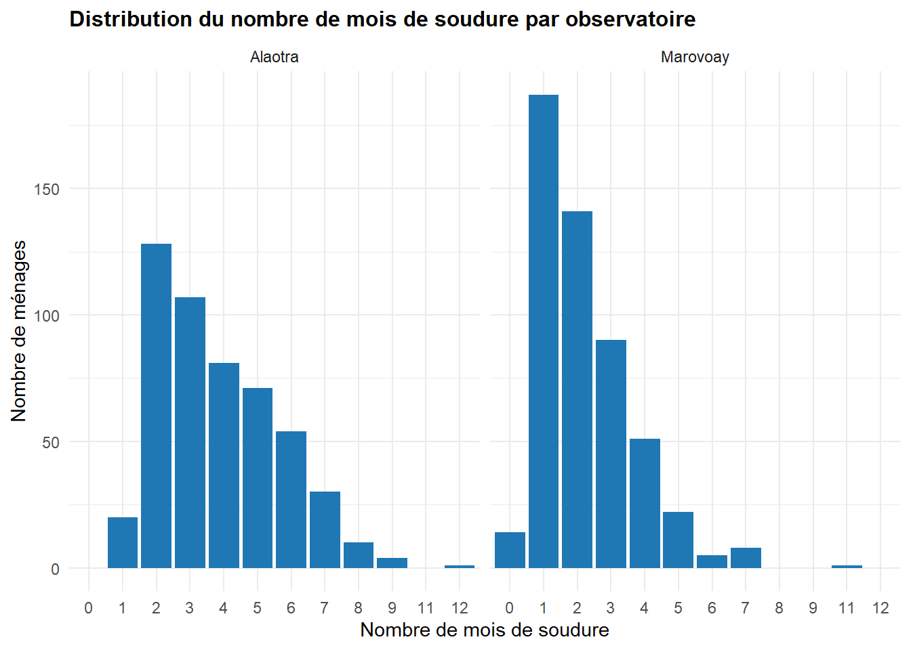
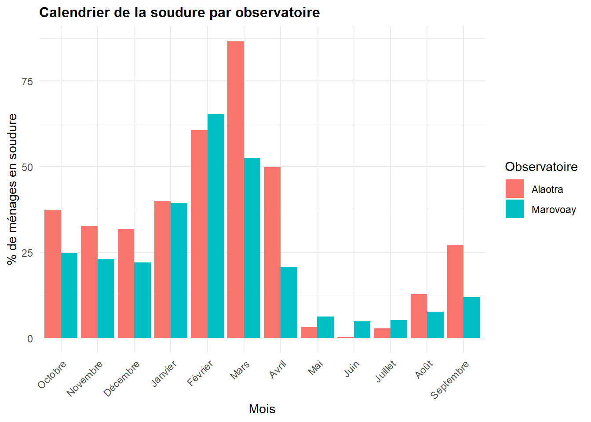
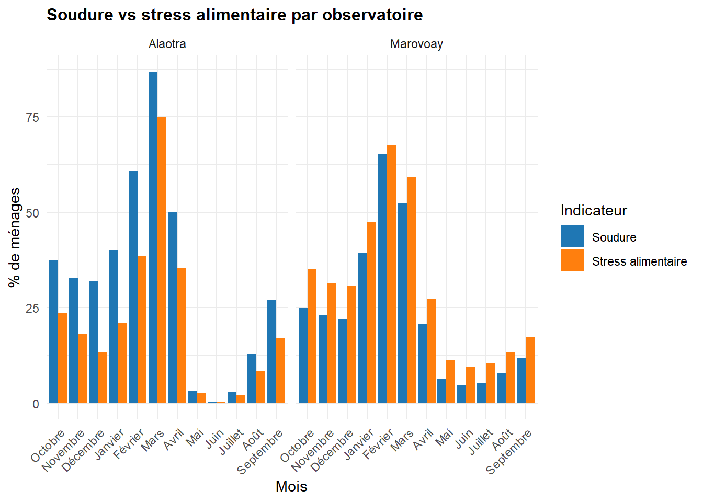
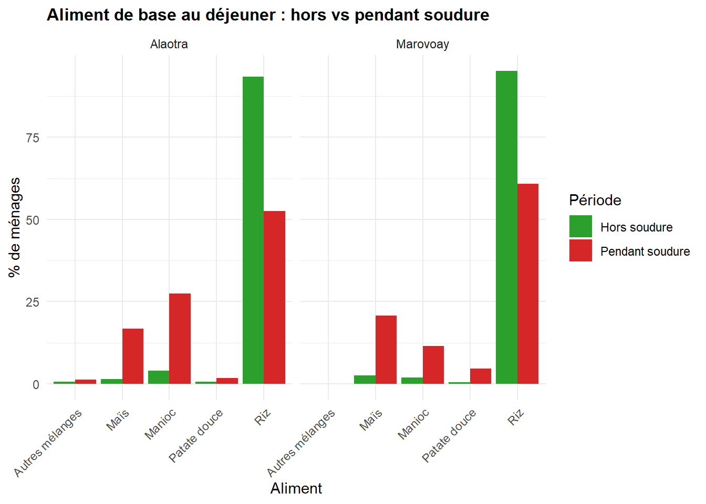
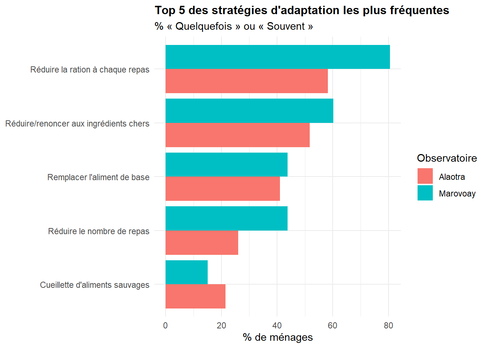

Ce chapitre traite de la sécurité alimentaire des ménages des observatoires ruraux d’Alaotra et de Marovoay. Il aborde trois dimensions : la période de soudure et le stress alimentaire, l’alimentation de base hors et pendant la soudure, et les stratégies d’adaptation adoptées par les ménages.
La période de soudure désigne les mois durant lesquels les stocks alimentaires du ménage sont insuffisants pour couvrir ses besoins.
6.1.1.1 Durée de la soudure par observatoire
Code
# T1 : Statistiques descriptives du nombre de mois de soudure par observatoiresoudure_stats <- res_sa %>%left_join(res_deb, by ="j5") %>%group_by(Observatory) %>%summarise(`Nombre de ménages`=n(),Minimum =min(sal2d, na.rm =TRUE), Médiane =median(sal2d, na.rm =TRUE),Moyenne =round(mean(sal2d, na.rm =TRUE), 1),Maximum =max(sal2d, na.rm =TRUE),`Écart-type`=round(sd(sal2d, na.rm =TRUE), 1),.groups ="drop" )soudure_stats %>%gt() %>%tab_header(title ="Durée de la période de soudure par observatoire",subtitle ="Nombre de mois de soudure (sal2d)" ) %>%tab_style(style =cell_text(weight ="bold"),locations =cells_column_labels() )
Durée de la période de soudure par observatoire
Nombre de mois de soudure (sal2d)
Observatory
Nombre de ménages
Minimum
Médiane
Moyenne
Maximum
Écart-type
Alaotra
507
1
3
3.8
12
1.8
Marovoay
519
0
2
2.2
11
1.4
6.1.1.2 Durée de la soudure par hameau et observatoire
Code
# T2 : Nombre moyen de mois de soudure par hameau et observatoiresoudure_hameau <- res_sa %>%left_join(res_deb, by ="j5") %>%group_by(Observatory, j4bis) %>%summarise(n_hh =n(),mean_soudure =round(mean(sal2d, na.rm =TRUE), 1),.groups ="drop" )# Ajouter lignes "Ensemble"soudure_combined <- soudure_hameau %>%group_by(Observatory) %>%summarise(j4bis ="Ensemble",mean_soudure =round(weighted.mean(mean_soudure, n_hh), 1),n_hh =sum(n_hh),.groups ="drop" ) %>%bind_rows(soudure_hameau, .) %>%arrange(Observatory, j4bis =="Ensemble", j4bis)soudure_combined %>%gt(groupname_col ="Observatory") %>%tab_header(title ="Durée moyenne de la soudure par hameau et observatoire") %>%cols_label(j4bis ="Hameau",n_hh ="Nb ménages",mean_soudure ="Mois de soudure (moy.)" ) %>%cols_hide(columns = n_hh) %>%tab_style(style =list(cell_text(weight ="bold"), cell_fill(color ="#F0F0F0")),locations =cells_body(rows = j4bis =="Ensemble") ) %>%tab_options(row_group.font.weight ="bold") %>%tab_style(style =cell_text(weight ="bold"),locations =cells_column_labels() )
Durée moyenne de la soudure par hameau et observatoire
Hameau
Mois de soudure (moy.)
Alaotra
Ambatoharanana
4.1
Ambatomanga
4.4
Ambodivoara
4.3
Ambohidrony
4.8
Analamiranga
3.6
Avaradrano
3.1
Feramanga Atsimo
3.4
Mangabe
3.7
Ensemble
3.8
Marovoay
Ampijoroa
1.9
Bepako
1.9
Madiromiongana
2.8
Maroala
2.2
Ensemble
2.2
6.1.1.3 Distribution du nombre de mois de soudure
Code
# G1 : Histogramme de la distribution du nombre de mois de soudureres_sa %>%left_join(res_deb, by ="j5") %>%filter(!is.na(sal2d)) %>%ggplot(aes(x =factor(sal2d))) +geom_bar(fill ="#1f77b4") +facet_wrap(~Observatory) +labs(title ="Distribution du nombre de mois de soudure par observatoire",x ="Nombre de mois de soudure",y ="Nombre de ménages" ) +theme_minimal() +theme(plot.title =element_text(face ="bold", size =12))

6.1.1.4 Calendrier de la soudure
Code
# T3 : % de ménages en soudure chaque mois, par observatoiremois_labels <-c("sal2d_10"="Octobre", "sal2d_11"="Novembre", "sal2d_12"="Décembre","sal2d_01"="Janvier", "sal2d_02"="Février", "sal2d_03"="Mars","sal2d_04"="Avril", "sal2d_05"="Mai", "sal2d_06"="Juin","sal2d_07"="Juillet", "sal2d_08"="Août", "sal2d_09"="Septembre")calendrier_soudure <- res_sa %>%left_join(res_deb, by ="j5") %>%group_by(Observatory) %>%summarise(across(starts_with("sal2d_"),~round(sum(!is.na(.) & . ==1) /n() *100, 1),.names ="{.col}" ),.groups ="drop" ) %>%pivot_longer(-Observatory, names_to ="mois_var", values_to ="pct") %>%mutate(Mois =factor(mois_labels[mois_var], levels = mois_labels) )calendrier_soudure %>%select(Observatory, Mois, pct) %>%pivot_wider(names_from = Observatory, values_from = pct) %>%gt() %>%tab_header(title ="Calendrier de la soudure par observatoire",subtitle ="% de ménages en période de soudure chaque mois" ) %>%fmt_number(columns =c(Alaotra, Marovoay), decimals =1) %>%tab_style(style =cell_text(weight ="bold"),locations =cells_column_labels() )
Calendrier de la soudure par observatoire
% de ménages en période de soudure chaque mois
Mois
Alaotra
Marovoay
Octobre
37.5
24.9
Novembre
32.7
23.1
Décembre
31.8
22.0
Janvier
40.0
39.3
Février
60.7
65.3
Mars
86.8
52.4
Avril
49.9
20.6
Mai
3.2
6.2
Juin
0.2
4.8
Juillet
2.8
5.2
Août
12.8
7.7
Septembre
27.0
11.9
Code
# G2 : Graphique du calendrier de la soudureggplot(calendrier_soudure, aes(x = Mois, y = pct, fill = Observatory)) +geom_col(position ="dodge") +labs(title ="Calendrier de la soudure par observatoire",x ="Mois",y ="% de ménages en soudure",fill ="Observatoire" ) +theme_minimal() +theme(axis.text.x =element_text(angle =45, hjust =1),plot.title =element_text(face ="bold", size =12) )

6.1.2 Stress alimentaire
Le stress alimentaire reflète les mois durant lesquels le ménage éprouve des difficultés à se nourrir correctement, que ce soit en quantité ou en qualité.
6.1.2.1 Durée du stress alimentaire par observatoire
Code
# T4 : Statistiques du stress alimentaire par observatoirestress_stats <- res_sa %>%left_join(res_deb, by ="j5") %>%group_by(Observatory) %>%summarise(`Nombre de ménages`=n(),Minimum =min(sal15a, na.rm =TRUE), Médiane =median(sal15a, na.rm =TRUE),Moyenne =round(mean(sal15a, na.rm =TRUE), 1),Maximum =max(sal15a, na.rm =TRUE),`Écart-type`=round(sd(sal15a, na.rm =TRUE), 1),.groups ="drop" )stress_stats %>%gt() %>%tab_header(title ="Durée du stress alimentaire par observatoire",subtitle ="Nombre de mois de stress alimentaire (sal15a)" ) %>%tab_style(style =cell_text(weight ="bold"),locations =cells_column_labels() )
Durée du stress alimentaire par observatoire
Nombre de mois de stress alimentaire (sal15a)
Observatory
Nombre de ménages
Minimum
Médiane
Moyenne
Maximum
Écart-type
Alaotra
507
0
2
2.5
12
1.6
Marovoay
519
0
3
3.3
12
2.0
6.1.2.2 Calendrier du stress alimentaire
Code
# T5 : % de ménages en stress alimentaire chaque moismois_labels_stress <-c("sal14a_10"="Octobre", "sal14a_11"="Novembre", "sal14a_12"="Décembre","sal14a_01"="Janvier", "sal14a_02"="Février", "sal14a_03"="Mars","sal14a_04"="Avril", "sal14a_05"="Mai", "sal14a_06"="Juin","sal14a_07"="Juillet", "sal14a_08"="Août", "sal14a_09"="Septembre")calendrier_stress <- res_sa %>%left_join(res_deb, by ="j5") %>%group_by(Observatory) %>%summarise(across(starts_with("sal14a_"),~round(sum(!is.na(.) & . ==1) /n() *100, 1),.names ="{.col}" ),.groups ="drop" ) %>%pivot_longer(-Observatory, names_to ="mois_var", values_to ="pct") %>%mutate(Mois =factor(mois_labels_stress[mois_var], levels = mois_labels_stress) )calendrier_stress %>%select(Observatory, Mois, pct) %>%pivot_wider(names_from = Observatory, values_from = pct) %>%gt() %>%tab_header(title ="Calendrier du stress alimentaire par observatoire",subtitle ="% de ménages en stress alimentaire chaque mois" ) %>%fmt_number(columns =c(Alaotra, Marovoay), decimals =1) %>%tab_style(style =cell_text(weight ="bold"),locations =cells_column_labels() )
Calendrier du stress alimentaire par observatoire
% de ménages en stress alimentaire chaque mois
Mois
Alaotra
Marovoay
Octobre
23.5
35.1
Novembre
18.1
31.4
Décembre
13.2
30.6
Janvier
21.1
47.4
Février
38.5
67.6
Mars
74.8
59.2
Avril
35.3
27.2
Mai
2.6
11.2
Juin
0.4
9.6
Juillet
2.0
10.4
Août
8.5
13.3
Septembre
17.0
17.3
6.1.2.3 Comparaison soudure et stress alimentaire
Code
# G3 : Superposition soudure vs stress alimentairecomparaison <-bind_rows( calendrier_soudure %>%mutate(Indicateur ="Soudure"), calendrier_stress %>%mutate(Indicateur ="Stress alimentaire"))ggplot(comparaison, aes(x = Mois, y = pct, fill = Indicateur)) +geom_col(position ="dodge") +facet_wrap(~Observatory) +labs(title ="Soudure vs stress alimentaire par observatoire",x ="Mois",y ="% de ménages",fill ="Indicateur" ) +scale_fill_manual(values =c("Soudure"="#1f77b4", "Stress alimentaire"="#ff7f0e")) +theme_minimal() +theme(axis.text.x =element_text(angle =45, hjust =1),plot.title =element_text(face ="bold", size =12) )

6.1.3 Alimentation de base
Cette section compare les aliments de base consommés aux trois repas, hors et pendant la période de soudure.
Code
# Définir les labels des alimentsalim_labels <-c("1"="Riz", "2"="Maïs", "3"="Patate douce","4"="Manioc", "5"="Pain/beignet/galettes", "6"="Pomme de terre","7"="Taro", "8"="Blé/farine de blé", "9"="Millet/sorgho","11"="Autre céréale", "12"="Igname","14"="Autre racine/tubercule", "15"="Pâte alimentaire","23"="Banane", "24"="Fruit à pain","25"="Boisson chaude", "26"="Lait", "27"="Fruit sauvage","28"="Rien", "29"="Brèdes", "30"="Légumineuse seule","31"="Légumineuse+Céréale", "32"="Céréale+Légumes","33"="Mélange tubercules", "34"="Tubercule+Céréale","35"="Tubercule+Légumes", "36"="Autres mélanges")
6.1.3.1 Alimentation hors soudure
Code
# T6 : Aliment principal aux 3 repas hors soudure, par observatoirealim_hors <- res_sa %>%left_join(res_deb, by ="j5") %>%select(Observatory, sal1a, sal1b, sal1c) %>%pivot_longer(cols =c(sal1a, sal1b, sal1c),names_to ="repas_var",values_to ="aliment_code" ) %>%mutate(Repas =case_when( repas_var =="sal1a"~"Petit-déjeuner", repas_var =="sal1b"~"Déjeuner", repas_var =="sal1c"~"Dîner" ),Aliment = alim_labels[as.character(aliment_code)] ) %>%filter(!is.na(Aliment)) %>%count(Observatory, Repas, Aliment) %>%group_by(Observatory, Repas) %>%mutate(pct =round(n /sum(n) *100, 1)) %>%ungroup() %>%filter(pct >=2) %>%arrange(Observatory, Repas, desc(pct))alim_hors %>%select(Observatory, Repas, Aliment, pct) %>%gt(groupname_col ="Observatory") %>%tab_header(title ="Alimentation de base hors soudure par observatoire",subtitle ="Aliments représentant au moins 2% des réponses" ) %>%cols_label(Repas ="Repas", Aliment ="Aliment", pct ="%") %>%fmt_number(columns = pct, decimals =1) %>%tab_style(style =cell_text(weight ="bold"),locations =cells_column_labels() ) %>%tab_options(row_group.font.weight ="bold")
Alimentation de base hors soudure par observatoire
Aliments représentant au moins 2% des réponses
Repas
Aliment
%
Alaotra
Déjeuner
Riz
93.5
Déjeuner
Manioc
4.0
Dîner
Riz
99.6
Petit-déjeuner
Riz
97.8
Marovoay
Déjeuner
Riz
95.2
Déjeuner
Maïs
2.5
Dîner
Riz
99.6
Petit-déjeuner
Riz
89.9
Petit-déjeuner
Rien
2.7
Petit-déjeuner
Boisson chaude
2.3
6.1.3.2 Alimentation pendant la soudure
Code
# T7 : Aliment principal aux 3 repas pendant la soudurealim_pendant <- res_sa %>%left_join(res_deb, by ="j5") %>%select(Observatory, sal2a, sal2b, sal2c) %>%pivot_longer(cols =c(sal2a, sal2b, sal2c),names_to ="repas_var",values_to ="aliment_code" ) %>%mutate(Repas =case_when( repas_var =="sal2a"~"Petit-déjeuner", repas_var =="sal2b"~"Déjeuner", repas_var =="sal2c"~"Dîner" ),Aliment = alim_labels[as.character(aliment_code)] ) %>%filter(!is.na(Aliment)) %>%count(Observatory, Repas, Aliment) %>%group_by(Observatory, Repas) %>%mutate(pct =round(n /sum(n) *100, 1)) %>%ungroup() %>%filter(pct >=2) %>%arrange(Observatory, Repas, desc(pct))alim_pendant %>%select(Observatory, Repas, Aliment, pct) %>%gt(groupname_col ="Observatory") %>%tab_header(title ="Alimentation de base pendant la soudure par observatoire",subtitle ="Aliments représentant au moins 2% des réponses" ) %>%cols_label(Repas ="Repas", Aliment ="Aliment", pct ="%") %>%fmt_number(columns = pct, decimals =1) %>%tab_style(style =cell_text(weight ="bold"),locations =cells_column_labels() ) %>%tab_options(row_group.font.weight ="bold")
Alimentation de base pendant la soudure par observatoire
Aliments représentant au moins 2% des réponses
Repas
Aliment
%
Alaotra
Déjeuner
Riz
52.6
Déjeuner
Manioc
27.4
Déjeuner
Maïs
16.7
Dîner
Riz
98.0
Petit-déjeuner
Riz
92.0
Petit-déjeuner
Rien
3.6
Marovoay
Déjeuner
Riz
60.8
Déjeuner
Maïs
20.7
Déjeuner
Manioc
11.5
Déjeuner
Patate douce
4.6
Dîner
Riz
92.5
Dîner
Manioc
2.6
Dîner
Maïs
2.4
Petit-déjeuner
Riz
55.7
Petit-déjeuner
Rien
25.3
Petit-déjeuner
Manioc
6.1
Petit-déjeuner
Boisson chaude
3.6
Petit-déjeuner
Maïs
3.4
Petit-déjeuner
Patate douce
2.8
6.1.3.3 Comparaison de l’alimentation au déjeuner : hors vs pendant soudure
Code
# G4 : Comparaison hors soudure vs pendant soudure au déjeuner (top 5 aliments)comp_dejeuner <- res_sa %>%left_join(res_deb, by ="j5") %>%select(Observatory, sal1b, sal2b) %>%pivot_longer(cols =c(sal1b, sal2b),names_to ="periode",values_to ="aliment_code" ) %>%mutate( Période =if_else(periode =="sal1b", "Hors soudure", "Pendant soudure"),Aliment = alim_labels[as.character(aliment_code)] ) %>%filter(!is.na(Aliment)) %>%count(Observatory, Période, Aliment) %>%group_by(Observatory, Période) %>%mutate(pct =round(n /sum(n) *100, 1)) %>%ungroup()# Garder le top 5 des aliments les plus fréquentstop_aliments <- comp_dejeuner %>%group_by(Aliment) %>%summarise(total =sum(n), .groups ="drop") %>%slice_max(total, n =5) %>%pull(Aliment)comp_dejeuner %>%filter(Aliment %in% top_aliments) %>%ggplot(aes(x = Aliment, y = pct, fill = Période)) +geom_col(position ="dodge") +facet_wrap(~Observatory) +labs(title ="Aliment de base au déjeuner : hors vs pendant soudure",x ="Aliment",y ="% de ménages",fill ="Période" ) +scale_fill_manual(values =c("Hors soudure"="#2ca02c", "Pendant soudure"="#d62728")) +theme_minimal() +theme(axis.text.x =element_text(angle =45, hjust =1),plot.title =element_text(face ="bold", size =12) )

6.1.3.4 Changement d’aliment de base au déjeuner entre hors et pendant soudure
Cette section analyse les stratégies d’adaptation adoptées par les ménages en période d’insécurité alimentaire. Chaque stratégie est évaluée sur une échelle de fréquence : 0 = Jamais, 1 = Rarement, 2 = Quelquefois, 3 = Souvent.
6.2.1 Fréquence des stratégies d’adaptation
Code
# T9 : Fréquence de chaque stratégie par observatoire# Labels des stratégiesstrat_labels <-c("ssa01"="S'endetter pour acheter des aliments","ssa02"="Emprunter des aliments","ssa03"="Remplacer l'aliment de base","ssa04"="Réduire la ration à chaque repas","ssa05"="Réduire/renoncer aux ingrédients chers","ssa07"="Cueillette d'aliments sauvages","ssa08"="Réduire les dépenses non essentielles","ssa09"="Envoyer un membre chez un autre ménage","ssa10"="Vendre des moyens de production","ssa11"="Vendre d'autres biens du ménage","ssa12"="Envoyer un membre travailler ailleurs","ssa14"="Faire une nouvelle activité","ssa15"="Réduire le nombre de repas","ssa17"="Autre stratégie")strat_vars <-names(strat_labels)freq_labels <-c("0"="Jamais", "1"="Rarement", "2"="Quelquefois", "3"="Souvent")# Calculer la distribution pour chaque stratégiestrat_data <- res_ssa %>%left_join(res_deb, by ="j5") %>%select(Observatory, all_of(strat_vars)) %>%pivot_longer(cols =all_of(strat_vars),names_to ="strategie_var",values_to ="frequence" ) %>%filter(!is.na(frequence)) %>%mutate( Stratégie = strat_labels[strategie_var], Fréquence = freq_labels[as.character(frequence)] ) %>%count(Observatory, Stratégie, Fréquence) %>%group_by(Observatory, Stratégie) %>%mutate(pct =round(n /sum(n) *100, 1)) %>%ungroup()# Tableau : % "Quelquefois" + "Souvent" par stratégie et observatoirestrat_resume <- strat_data %>%filter(Fréquence %in%c("Quelquefois", "Souvent")) %>%group_by(Observatory, Stratégie) %>%summarise(pct_freq =sum(pct), .groups ="drop") %>%pivot_wider(names_from = Observatory, values_from = pct_freq, values_fill =0) %>%arrange(desc(Alaotra + Marovoay))strat_resume %>%gt() %>%tab_header(title ="Stratégies d'adaptation les plus fréquentes",subtitle ="% de ménages ayant recours « Quelquefois » ou « Souvent »" ) %>%cols_label(Stratégie ="Stratégie", Alaotra ="Alaotra (%)", Marovoay ="Marovoay (%)") %>%fmt_number(columns =c(Alaotra, Marovoay), decimals =1) %>%tab_style(style =cell_text(weight ="bold"),locations =cells_column_labels() ) %>%tab_style(style =cell_fill(color ="#e8f4f8"),locations =cells_body(rows =seq(1, nrow(strat_resume), 2)) )
Stratégies d'adaptation les plus fréquentes
% de ménages ayant recours « Quelquefois » ou « Souvent »
Parmi les ménages qui empruntent des aliments (ssa02 > 0)
Source
Alaotra
Marovoay
N
%
N
%
Autres
4
1.7
2
1.4
Commerçants
66
28.0
10
6.9
Famille
107
45.5
85
58.6
Usuriers
4
1.7
8
5.6
Voisins
82
35.0
39
27.1
Code
# G6 : Top 5 des stratégies les plus fréquentestop5 <- strat_resume %>%slice_head(n =5) %>%pivot_longer(cols =c(Alaotra, Marovoay), names_to ="Observatory", values_to ="pct")ggplot(top5, aes(x =reorder(Stratégie, pct), y = pct, fill = Observatory)) +geom_col(position ="dodge") +coord_flip() +labs(title ="Top 5 des stratégies d'adaptation les plus fréquentes",subtitle ="% « Quelquefois » ou « Souvent »",x =NULL,y ="% de ménages",fill ="Observatoire" ) +theme_minimal() +theme(plot.title =element_text(face ="bold", size =12) )

6.3 Indice synthétique de stratégies d’adaptation (CSI simplifié)
Un score simplifié est calculé en sommant les fréquences de toutes les stratégies (0 à 3) pour chaque ménage. Plus le score est élevé, plus le ménage recourt intensément à des stratégies d’adaptation.